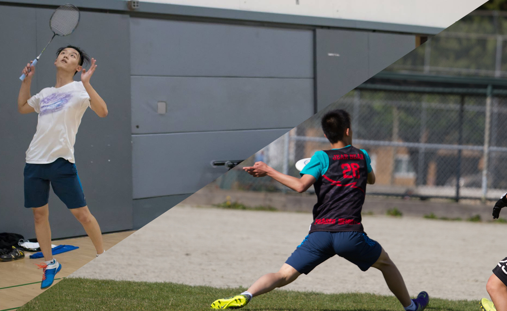

Public Speaking
British Columbia Forensic League
Debate Coach, 2017-2018
Fraser Heights Debate Club
President, Member, 2014-2018
Vancouver Model United Nations
Director General, 2017-2018
(You can learn about these in my LinkedIn profile - click on the icon below)

Athletics
Cal Badminton
Member, 2018 - Present
Fraser Heights Badminton
Team Member, 2014-2018
Fraser Heights Ultimate Frisbee
Team Member, 2016-2018

Music
Piano
Associate Diploma (ARCT)
Trombone
Lead Trombone (Concert and Jazz), 2014 - 2018
Guitar
Still Learning :)